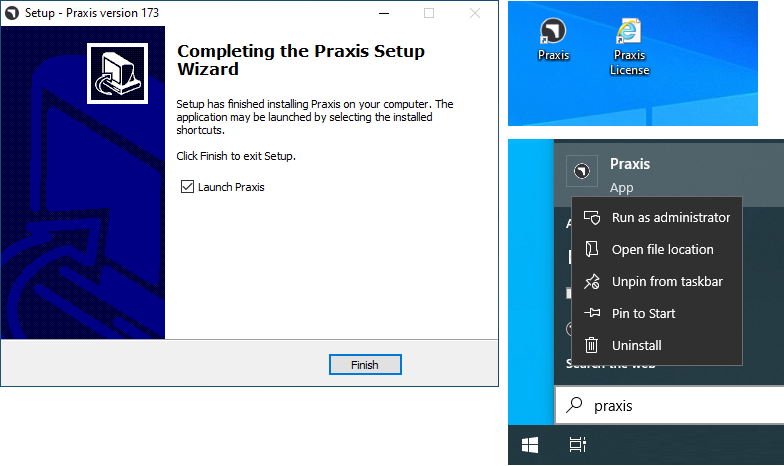

Instalace serveru
Postupujte podle pokynů pro instalaci serveru TruSmartCAM spolu s SQL.
|
Administrátorská práva
Pro provedení této instalace musí mít uživatel administrátorská oprávnění. |
-
Spusťte Setup.TruSmartCAM.<version>.exe pro zahájení instalace.
| Verze je číslo. |
-
Přečtěte si licenční smlouvu a zvolte I accept the agreement a poté klikněte na Další .

Krok 1 : Umístění instalace
-
Zadejte instalační adresář nebo přijměte výchozí instalaci
C:\Program Files\Metamation\Praxisa klikněte na Další.-
C:\Program Files\Metamation\Praxis- Instalační složka bude obsahovat následující složky: Bin, MetaCAM, Samples a Tracker. -
C:\Program Data\Metamation- Datová složka bude obsahovat následující složky: TruSmartCAM, TecZone a MetaCAM.
-

Krok 2 : Výběr komponent
| Typ instalace | Komponenty |
|---|---|
Full |
Server + Desktop client + Engine |
Client |
Desktop Client |
Server |
Server + Desktop client |
Station |
Vybere všechny terminály stanic jako TecZone, MetaCAM, RightAngle(Bend Controller), Vulcan(Laser Machine Controller) |
Custom |
Výběr podle volby uživatele. |
-
Zvolte Full Installation. Vyberte Code Senders a Bend Code Senders z TruSmartCAM Tools. Nyní se typ instalace změní na Zákaznické. Klikněte na Další.

Krok 3 : Volba instalace SQL serveru
|
Instalace SQL Express 2022 je potřebná pouze pro server TruSmartCAM. Tato možnost není k dispozici pro instalace Client a Sync. Tato možnost je také zaškrtnuta a nainstalována poprvé a poté ji lze ignorovat. Pokud je již SQL nainstalováno na serveru TruSmartCAM, může uživatel Krok 3 přeskočit. |
-
V Select Additional Tasks : Klikněte na Install SQL Express a klikněte na Další.
-
V Ready to Install : Shrňte všechny funkce instalace a klikněte na Install.

Krok 4 : Instalace SQL serveru
Jakmile jsou nainstalovány komponenty TruSmartCAM, instalační program pokračuje instalací SQL serveru. Pro pokračování přijměte licenční smlouvu a nainstalujte SQL express s výchozími možnostmi.

Po dokončení instalace klikněte na Close a dokončete instalaci.

| V závislosti na verzi Windows může zavření instalace SQL vyzvat k restartu. |
Krok 5 : Zástupce Windows na ploše
-
Po instalaci SQL, pokud se systém nerestartuje, zaškrtněte políčko Launch TruSmartCAM a klikněte na Finish.
-
Pokud se systém restartuje, spusťte ikonu zástupce TruSmartCAM na ploše nebo zadejte TruSmartCAM v nabídce Start systému Windows a spusťte jako správce.
| Instalace serveru : Na ploše jsou k dispozici ikony zástupců TruSmartCAM a TruSmartCAM License. + Instalace Client/SYNC : Na ploše je k dispozici pouze ikona zástupce TruSmartCAM. |

Krok 6 : Registrace licence
-
Do pole Serial Number zadejte Sériový klíč TruSmartCAM poskytnutý týmem Trumpf Metamation Service. Do pole "Registered to" zadejte <Název společnosti> a e-mail. Klikněte na OK.

|
V případě, že síťový firewall blokuje registraci licence nebo není internet v PC serveru TruSmartCAM, pak se licence TruSmartCAM provádí offline aktivací. Odešlete e-mailem soubor Prax.request ze složky C:\ProgramData\Metamation\Praxis týmu Trumpf Metamation Service. Tým Trumpf Metamation poskytne soubor Prax.lock, který je třeba vložit do této složky. |
Krok 7 : Úvodní jednorázová konfigurace
-
Zadejte název databáze a nastavte umístění úložiště dat. Zaškrtněte políčko Použít SQL server a vyberte název SQL serveru pro připojení k databázi. Klikněte na OK.

-
Desktop klient TruSmartCAM se otevře a v dolní části zobrazí Database Connection Succeeded.
-
Byly vytvořeny konfigurační soubory TruSmartCAM, TecZone a MetaCAM s výchozími konfiguračními stroji nebo proti licenčním strojům TruSmartCAM. Stejná konfigurace bude sdílena mezi všemi klienty TruSmartCAM.

Uvítací obrazovka se zobrazuje s přihlašovacím jménem uživatele Windows jako přihlašovací jméno a jméno TruSmartCAM. První uživatel TruSmartCAM je považován za Stanoviště Admin. Zadejte e-mail a heslo. Klikněte na OK .
Zaškrtněte políčko Zapamatovat pro uložení přihlašovacích údajů pro příště. Vymazání políčka Zapamatovat vyvolá dialogové okno pro přihlášení a heslo vždy, když je spuštěna aplikace TruSmartCAM.

Krok 8 : Přihlášení do TruSmartCAM
-
Zavřete TruSmartCAM a znovu jej otevřete. Systém vás vyzve k zadání přihlašovacích údajů TruSmartCAM.

-
Přihlášené uživatelské jméno je zobrazeno vedle ikony uživatele v TruSmartCAM application header.

-
When you hover over the user icon, the system displays:

-
The user role (for example: Programmer, Admin).
-
A shortcut to log out: Ctrl+L.
-
-
Clicking the user icon opens a menu that allows you to:

-
Editovat informaci… - Update your profile details.
-
Změnit heslo… - Change your account password.
-
Odhlásit - Sign out of the application.
-
Zrušit - Close the menu without making any changes.
-
Step 9 : Factory Machine Configuration
-
TruSmartCAM License [All machines enables license bit] : Default TruSmartCAM Machine and Material are considered as Factory Configuration.
-
TruSmartCAM License [No demo and few machine bit enabled] : Those Few machines and default Material are considered as Factory Configuration.
-
(Open → Import) a new Part from the
C:\Program Files\Metamation\Praxis\Samples\Partsand verify if the Part is imported successfully.

Note 1 : TruSmartCAM Monitor
-
TruSmartCAM Monitor with Engine Installation (Site admin rights):
-
TruSmartCAM Monitor with Engine along with Site Admin TruSmartCAM Rights will have following options:
-
Push TruSmartCAM configuration, TecZone, MetaCAM configuration across all TruSmartCAM Clients. Also have rights to create New TruSmartCAM User Login.
-
Show Agents will show the total engine available to do automation task which is against the TruSmartCAM License.
-
-

-
TruSmartCAM Monitor without Engine Installation (Site admin rights):

-
TruSmartCAM Monitor without Engine Installation (Non Site Admin rights):

|
PC running TruSmartCAM application must have the Engine TruSmartCAM component installed [Server PC or in any Client install]. Engine TruSmartCAM component installed PC should be running 24x7 to do all automation tasks. |
Note 2 : Lock Tracker
-
Click TruSmartCAM License shortcut available in TruSmartCAM Server Desktop. Alternatively, open http://localhost:7171/metamation/locktrack url in any web browser.
This will open Lock Tracker module which have License information, TruSmartCAM current session information and Log.
LockTracker HOME Page : This show the TruSmartCAM Serial Number, Serial Expiry information and Serial bits available information.

LockTracker SESSIONS Page : Current TruSmartCAM Server connected information like TruSmartCAM Desktop client PC, PMonitor, PEngine Status.

LockTracker LOGs Page : TruSmartCAM client start and log off | Pmonitor start and PEngine connect/disconnect status etc., can be viewed in this Logs page.

Note 3 : OpenGL
-
TruSmartCAM application while opening which gets closed immediately and also pmonitor is not shown at the task bar.
-
This represents OpenGl issue.
-
Another way to confirm this: Open C:\Program Files\Metamation\Praxis\Bin\Flux.exe which displays error dialog about the OpenGL issue.

-
Update C:\ProgramData\Metamation\Praxis\Prax.ini, options section with GLVersion=1 make TruSmartCAM application open successfully.
[Options]
GLVersion=1.0